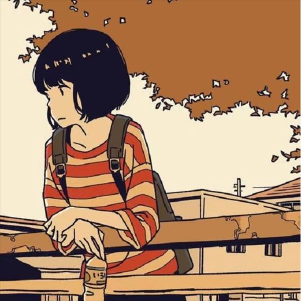
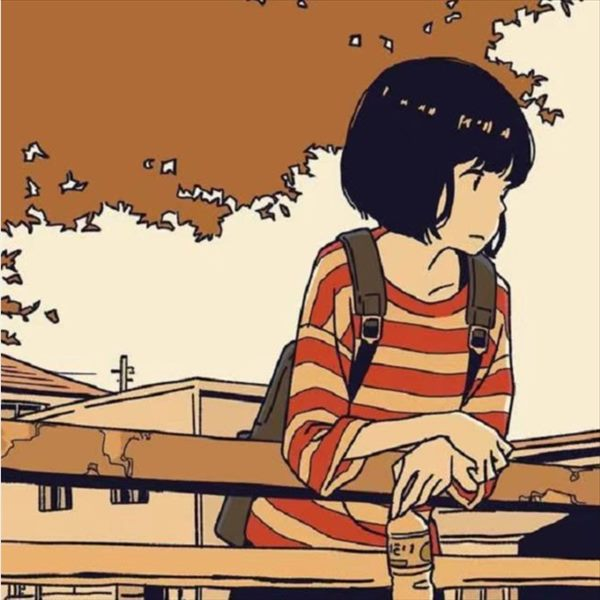

kuanyuchen
这是一个随意的blog
秋阴未散霜飞晚，留得残荷听雨声
内容
-
和很久没见的初中同学吃了顿饭。聊了四十分钟，说了很多话，但好像什么都没说。回来睡不着，写了一篇。
-
一个人做饭第十天。以前一直以为是不会做，今天想明白了：是没人要吃，所以「没必要」。今天给自己下了碗面，吃完把碗洗了——这件小事以前很少发生。
-
重读一本三年前读不下去的小说，这次读到半夜一点半。书没变，是我能读懂它了。顺手翻了两本以前很喜欢的，反而读不进去了。
-
没定目的地就出门了，左转走进一条住了两年、路过上百次却从没进去过的巷子。半路下雨，在小卖部屋檐下站了十几分钟。什么也没买，什么也没办。


雨停之前在屋檐下站了十几分钟 -
下了整天雨，出不了门，干脆收拾房间。清了三个纸箱出来，中间坐在地上发过两次呆。最难扔的其实不是东西，是「以后可能会用上」的那个自己。